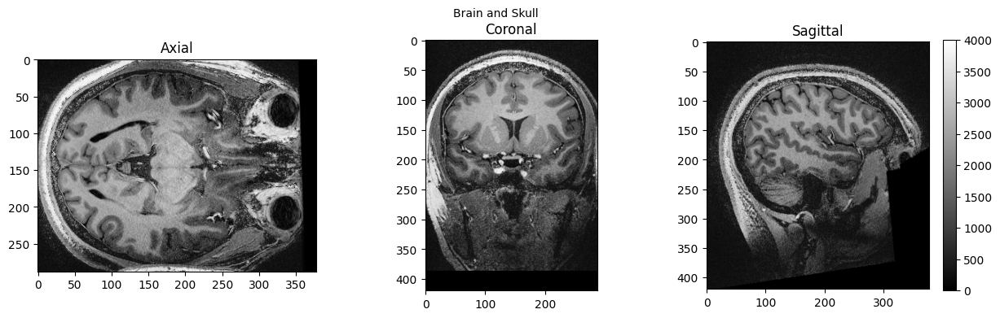
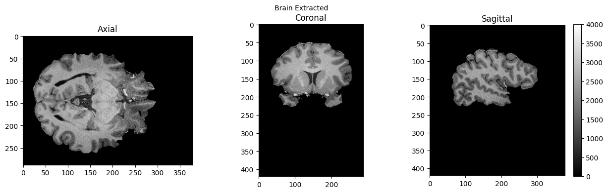
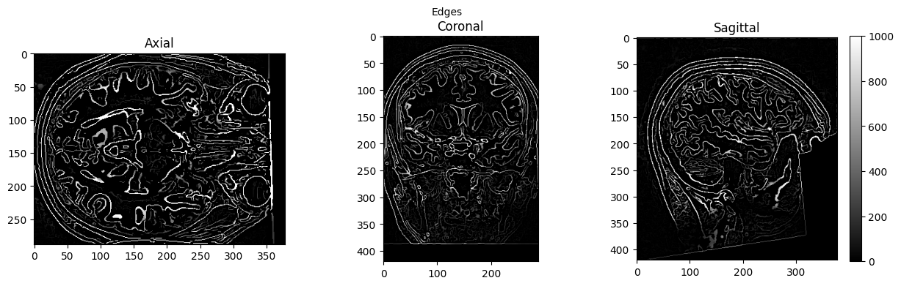
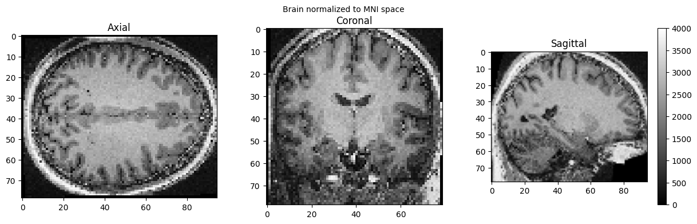

Basic Nipype#
Author: Steffen Bollmann
Date: 17 Oct 2024
License:
Note: If this notebook uses neuroimaging tools from Neurocontainers, those tools retain their original licenses. Please see Neurodesk citation guidelines for details.
Citation and Resources:#
Dataset from OSF#
Shaw, T., & Bollmann, S. (2020). Dataset for Towards Optimising MRI Methods for ChAracterisation of Tissue (TOMCAT) [Data set]. OSF. https://doi.org/10.17605/OSF.IO/BT4EZ
Tools included in this workflow#
Nipype:
Esteban, O., Markiewicz, C. J., Burns, C., Goncalves, M., Jarecka, D., Ziegler, E., Berleant, S., Ellis, D. G., Pinsard, B., Madison, C., Waskom, M., Notter, M. P., Clark, D., Manhães-Savio, A., Clark, D., Jordan, K., Dayan, M., Halchenko, Y. O., Loney, F., … Ghosh, S. (2025). nipy/nipype: 1.8.6 (1.8.6). Zenodo. https://doi.org/10.5281/zenodo.15054147
FSL:
M. Jenkinson, C.F. Beckmann, T.E. Behrens, M.W. Woolrich, S.M. Smith. FSL. NeuroImage, 62:782-90, 2012
Smith S. M. (2002). Fast robust automated brain extraction. Human brain mapping, 17(3), 143–155. https://doi.org/10.1002/hbm.10062
AFNI:
Cox RW (1996). AFNI: software for analysis and visualization of functional magnetic resonance neuroimages. Comput Biomed Res 29(3):162-173. doi:10.1006/cbmr.1996.0014 https://pubmed.ncbi.nlm.nih.gov/8812068/
RW Cox, JS Hyde (1997). Software tools for analysis and visualization of FMRI Data. NMR in Biomedicine, 10: 171-178. https://pubmed.ncbi.nlm.nih.gov/9430344/
SPM12:
Friston, K. J. (2007). Statistical parametric mapping: The analysis of functional brain images (1st ed). Elsevier / Academic Press.
Demonstrating the module system in Python and Nipype#
# we can use module to load fsl in a specific version
import module
await module.load('fsl/6.0.4')
await module.list()
['fsl/6.0.4']
!bet
Usage: bet <input> <output> [options]
Main bet2 options:
-o generate brain surface outline overlaid onto original image
-m generate binary brain mask
-s generate approximate skull image
-n don't generate segmented brain image output
-f <f> fractional intensity threshold (0->1); default=0.5; smaller values give larger brain outline estimates
-g <g> vertical gradient in fractional intensity threshold (-1->1); default=0; positive values give larger brain outline at bottom, smaller at top
-r <r> head radius (mm not voxels); initial surface sphere is set to half of this
-c <x y z> centre-of-gravity (voxels not mm) of initial mesh surface.
-t apply thresholding to segmented brain image and mask
-e generates brain surface as mesh in .vtk format
Variations on default bet2 functionality (mutually exclusive options):
(default) just run bet2
-R robust brain centre estimation (iterates BET several times)
-S eye & optic nerve cleanup (can be useful in SIENA - disables -o option)
-B bias field & neck cleanup (can be useful in SIENA)
-Z improve BET if FOV is very small in Z (by temporarily padding end slices)
-F apply to 4D FMRI data (uses -f 0.3 and dilates brain mask slightly)
-A run bet2 and then betsurf to get additional skull and scalp surfaces (includes registrations)
-A2 <T2> as with -A, when also feeding in non-brain-extracted T2 (includes registrations)
Miscellaneous options:
-v verbose (switch on diagnostic messages)
-h display this help, then exits
-d debug (don't delete temporary intermediate images)
Load AFNI and SPM as well#
await module.load('afni/26.0.07')
await module.load('spm12/r7771')
await module.list()
['fsl/6.0.4', 'afni/26.0.07', 'spm12/r7771']
Download test data#
%%bash
if [ -f ./sub-01_ses-01_7T_T1w_defaced.nii ]; then
echo "nii Output file exists, not downloading or unpacking again"
else
if [ ! -f ./sub-01_ses-01_7T_T1w_defaced.nii.gz ]; then
echo "nii.gz does not exist. So, it needs to be downloaded."
osfURL="osfstorage/TOMCAT_DIB/sub-01/ses-01_7T/anat/sub-01_ses-01_7T_T1w_defaced.nii.gz"
echo "downloading now ..."
osf -p bt4ez fetch $osfURL ./sub-01_ses-01_7T_T1w_defaced.nii.gz
fi
if [ -f ./sub-01_ses-01_7T_T1w_defaced.nii.gz ]; then
echo "nii.gz exists. So, it needs to be unpacked and deleted"
echo "unpacking now ..."
gunzip ./sub-01_ses-01_7T_T1w_defaced.nii.gz
fi
fi
nii Output file exists, not downloading or unpacking again
%ls
AA_Neurodesk_demo_tour.ipynb ipyniivue_ipywidgets.ipynb
MRIQC.ipynb nipype_full.ipynb
Magic_commands.ipynb nipype_short.ipynb
PyBIDS.ipynb papermill-slurm-submission-example.ipynb
RISE_slideshow.ipynb pydra_preproc_ants.ipynb
bids_conversion.ipynb sub-01_ses-01_7T_T1w_defaced.nii
intro.md sub-01_ses-01_7T_T1w_defaced_brain.nii.gz
Run nipype pipeline#
%%capture
!pip install nibabel numpy scipy
from nipype.interfaces import fsl
from nipype.interfaces import afni
btr = fsl.BET()
btr.inputs.in_file = './sub-01_ses-01_7T_T1w_defaced.nii'
btr.inputs.frac = 0.4
btr.inputs.out_file = './sub-01_ses-01_7T_T1w_defaced_brain.nii'
res = btr.run()
edge3 = afni.Edge3()
edge3.inputs.in_file = './sub-01_ses-01_7T_T1w_defaced.nii'
edge3.inputs.out_file = './sub-01_ses-01_7T_T1w_defaced_edges.nii'
edge3.inputs.datum = 'byte'
res = edge3.run()
260213-05:08:37,689 nipype.interface WARNING:
FSLOUTPUTTYPE environment variable is not set. Setting FSLOUTPUTTYPE=NIFTI
260213-05:11:34,221 nipype.interface INFO:
stderr 2026-02-13T05:11:34.221223:++ 3dedge3: AFNI version=AFNI_26.0.07 (Jan 24 2026) [64-bit]
260213-05:11:35,712 nipype.interface INFO:
stderr 2026-02-13T05:11:35.712814:** AFNI converts NIFTI_datatype=4 (INT16) in file /home/jovyan/Git_repositories/neurodeskedu/books/examples/workflows/sub-01_ses-01_7T_T1w_defaced.nii to FLOAT32
260213-05:11:35,713 nipype.interface INFO:
stderr 2026-02-13T05:11:35.712814: Warnings of this type will be muted for this session.
260213-05:11:35,714 nipype.interface INFO:
stderr 2026-02-13T05:11:35.712814: Set AFNI_NIFTI_TYPE_WARN to YES to see them all, NO to see none.
260213-05:11:35,724 nipype.interface INFO:
stderr 2026-02-13T05:11:35.724699:*+ WARNING: If you are performing spatial transformations on an oblique dset,
260213-05:11:35,733 nipype.interface INFO:
stderr 2026-02-13T05:11:35.724699: such as /home/jovyan/Git_repositories/neurodeskedu/books/examples/workflows/sub-01_ses-01_7T_T1w_defaced.nii,
260213-05:11:35,734 nipype.interface INFO:
stderr 2026-02-13T05:11:35.724699: or viewing/combining it with volumes of differing obliquity,
260213-05:11:35,734 nipype.interface INFO:
stderr 2026-02-13T05:11:35.724699: you should consider running:
260213-05:11:35,735 nipype.interface INFO:
stderr 2026-02-13T05:11:35.724699: 3dWarp -deoblique
260213-05:11:35,735 nipype.interface INFO:
stderr 2026-02-13T05:11:35.724699: on this and other oblique datasets in the same session.
260213-05:11:35,736 nipype.interface INFO:
stderr 2026-02-13T05:11:35.724699: See 3dWarp -help for details.
260213-05:11:35,736 nipype.interface INFO:
stderr 2026-02-13T05:11:35.724699:++ Oblique dataset:/home/jovyan/Git_repositories/neurodeskedu/books/examples/workflows/sub-01_ses-01_7T_T1w_defaced.nii is 1.253358 degrees from plumb.
%ls
AA_Neurodesk_demo_tour.ipynb nipype_full.ipynb
MRIQC.ipynb nipype_short.ipynb
Magic_commands.ipynb papermill-slurm-submission-example.ipynb
PyBIDS.ipynb pydra_preproc_ants.ipynb
RISE_slideshow.ipynb sub-01_ses-01_7T_T1w_defaced.nii
bids_conversion.ipynb sub-01_ses-01_7T_T1w_defaced_brain.nii.gz
intro.md sub-01_ses-01_7T_T1w_defaced_edges.nii
ipyniivue_ipywidgets.ipynb
# View 3D data
import matplotlib.pyplot as plt
def view_slices_3d(image_3d, slice_nbr, vmin, vmax, title=''):
# print('Matrix size: {}'.format(image_3d.shape))
fig = plt.figure(figsize=(15, 4))
plt.suptitle(title, fontsize=10)
plt.subplot(131)
plt.imshow(np.take(image_3d, slice_nbr, 2), vmin=vmin, vmax=vmax, cmap='gray')
plt.title('Axial');
plt.subplot(132)
image_rot = ndimage.rotate(np.take(image_3d, slice_nbr, 1),90)
plt.imshow(image_rot, vmin=vmin, vmax=vmax, cmap='gray')
plt.title('Coronal');
plt.subplot(133)
image_rot = ndimage.rotate(np.take(image_3d, slice_nbr, 0),90)
plt.imshow(image_rot, vmin=vmin, vmax=vmax, cmap='gray')
plt.title('Sagittal');
cbar=plt.colorbar()
def get_figure():
"""
Returns figure and axis objects to plot on.
"""
fig, ax = plt.subplots(1)
plt.tick_params(top=False, right=False, which='both')
ax.spines['top'].set_visible(False)
ax.spines['right'].set_visible(False)
return fig, ax
import nibabel as nib
from matplotlib import transforms
from scipy import ndimage
import numpy as np
# load data
brain_full = nib.load('./sub-01_ses-01_7T_T1w_defaced.nii').get_fdata()
brain = nib.load('./sub-01_ses-01_7T_T1w_defaced_brain.nii.gz').get_fdata()
edges = nib.load('./sub-01_ses-01_7T_T1w_defaced_edges.nii').get_fdata()
view_slices_3d(brain_full, slice_nbr=230, vmin=0, vmax=4000, title='Brain and Skull')
view_slices_3d(brain, slice_nbr=230, vmin=0, vmax=4000, title='Brain Extracted')
view_slices_3d(edges, slice_nbr=230, vmin=0, vmax=1000, title='Edges')



from ipyniivue import NiiVue
nv = NiiVue()
nv.load_volumes([{"path": "./sub-01_ses-01_7T_T1w_defaced_brain.nii.gz"}])
nv
SPM can also be used in such a workflow, but unfortunately, this will trigger a warning “stty: ‘standard input’: Inappropriate ioctl for device”, which you can ignore (or help us to find out where it comes from):
import nipype.interfaces.spm as spm
norm12 = spm.Normalize12()
norm12.inputs.image_to_align = './sub-01_ses-01_7T_T1w_defaced.nii'
norm12.run()
<nipype.interfaces.base.support.InterfaceResult at 0x7f8b93e522c0>
brain_full = nib.load('./wsub-01_ses-01_7T_T1w_defaced.nii').get_fdata()
view_slices_3d(brain_full, slice_nbr=50, vmin=0, vmax=4000, title='Brain normalized to MNI space')

nv = NiiVue()
nv.load_volumes([{"path": "./wsub-01_ses-01_7T_T1w_defaced.nii"}])
nv
Dependencies in Jupyter/Python#
Using the package watermark to document system environment and software versions used in this notebook
%load_ext watermark
%watermark
%watermark --iversions
Last updated: 2026-02-13T05:21:43.407198+00:00
Python implementation: CPython
Python version : 3.13.9
IPython version : 9.7.0
Compiler : GCC 14.3.0
OS : Linux
Release : 5.15.0-164-generic
Machine : x86_64
Processor : x86_64
CPU cores : 32
Architecture: 64bit
IPython : 9.7.0
ipyniivue : 2.4.4
matplotlib: 3.10.8
nibabel : 5.3.3
nipype : 1.10.0
numpy : 2.3.5
scipy : 1.15.3